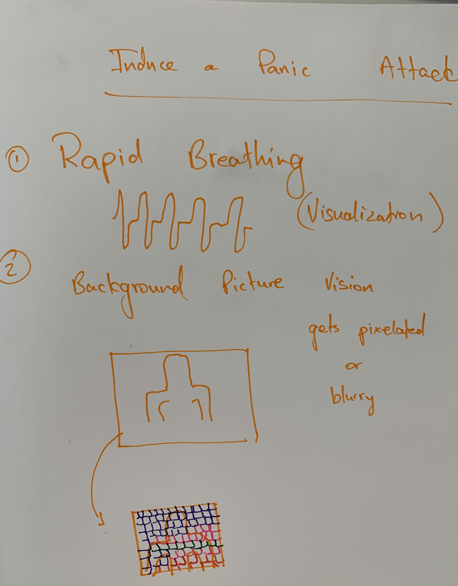
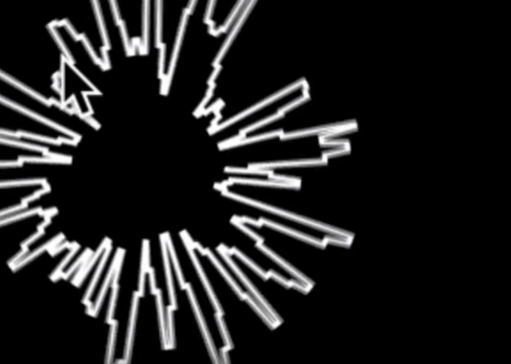
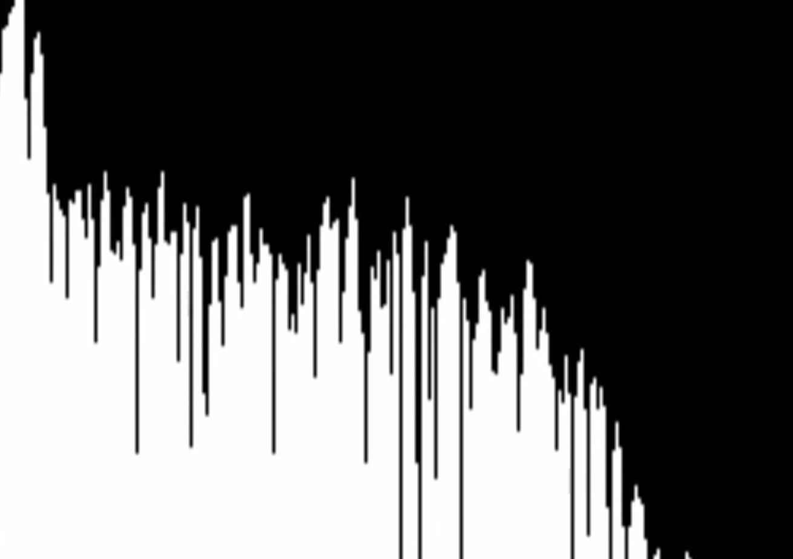
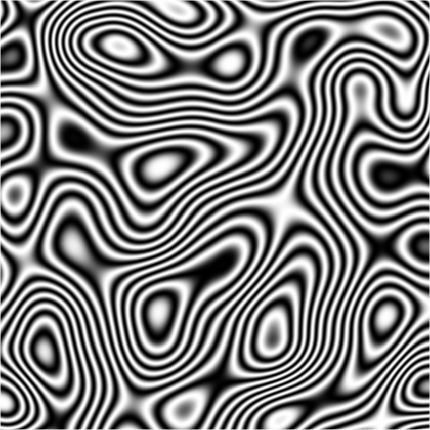
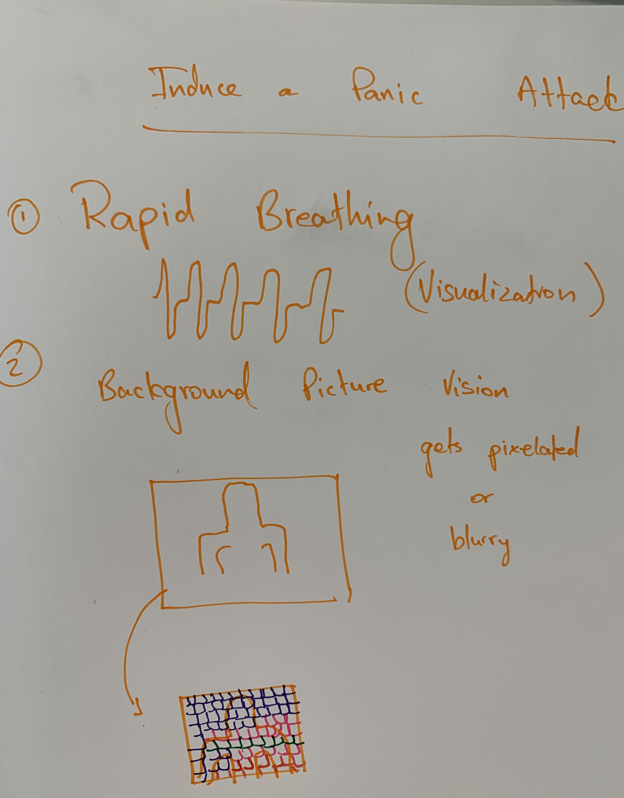
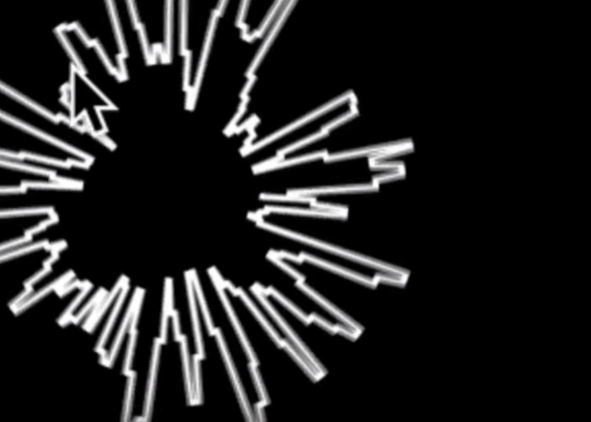
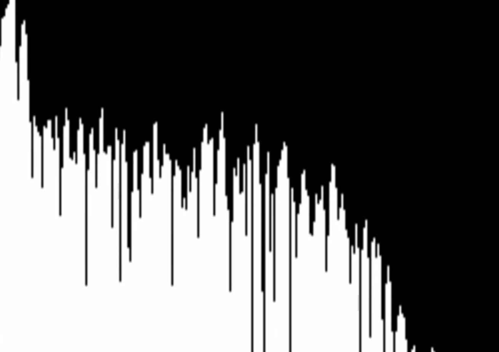
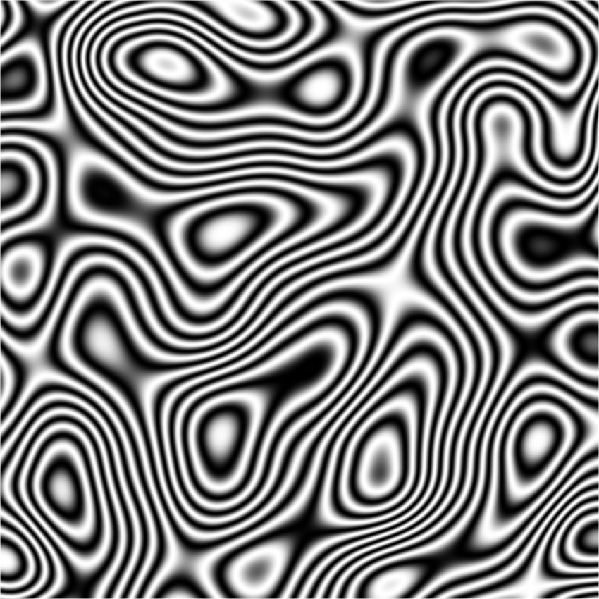

Week Two - Proposal
Momentary Madness
For the 1st Project Proposal, I started my process with brainstorming all the ideas that I'm passionate about or feel strongly towards, and wanted to represent in a political, social, or personal manner in order to depict time.
I settled towards focusing on something extremely personal: anxiety. In today's world, everyone is exposed to a wide range of stress factors. From the moment we wake up to the sound of the ever annoying alarm clock, our thoughts and fears come rushing in regarding our day. Suddenly, we're stuck in traffic on our way to work/study, are faced with extremely demanding work loads, our responsibilities demanding our constant attention, and just when we think we can't take it anymore, our worst fears and anxieties come rushing in.
Keeping those moments of panic into consideration, I thought it would be interesting to explore the exact moment the fear of failure starts to creep in.
For example, taking all the symptoms of a panic attack and merging them into an animation that seeks to make sense of the panic. A visualization of the madness that is a combination of rapid breathing, heart palpitations, blurry vision, to name a few, and merge them into a synchronized almost melodious motion graphic.
Below are some images of my brainstorming process plus an image describing my proposed process for the animation. I also attached a few images as part of my "mood board" in order to help show how sounds such as rapid breathing or vibrations resulting from heart palpitations could be visualized.
Needless to say, I'm extremely excited about this Project, and really looking forward to try and illustrate the "Moment of Madness" as something soothing and maybe even harmonious.
 







go to home page